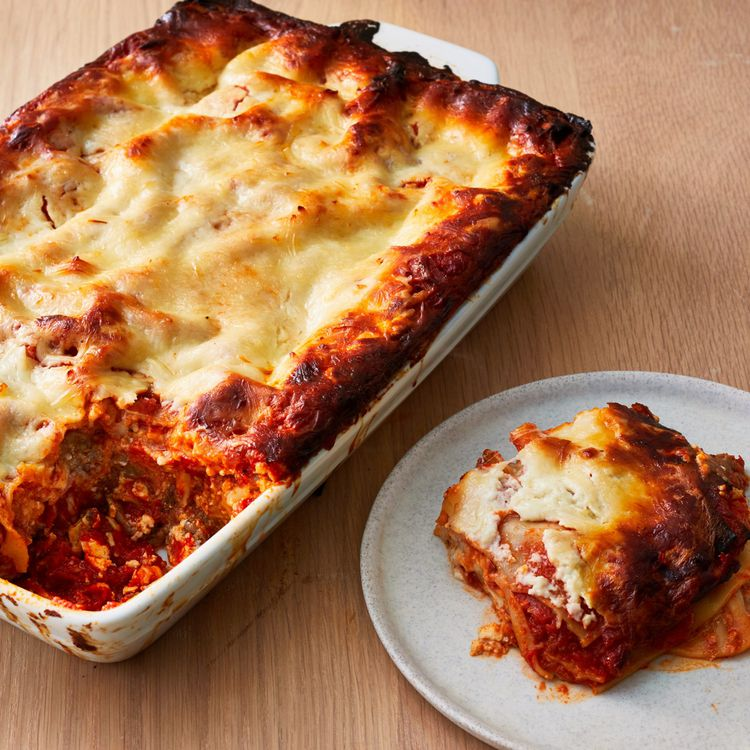

Lasagna Recipe

Photo:AllRecipes
Description
This lasagna recipe will result in a delicious,cheesy, and beefy dish. Your taste buds will explode and you will be left stuffed.
The prep time for this recipe is 30 minutes, and the cook time is 2 hours and 30 min. In total it will take 3 hours to complete this dish. This dish will be able to serve up to 12 people.
Ingredients
- Meat: 3/4 pound lean ground beef and 1 pound sweet Italian sausage
- Onion and garlic: 1 onion and 2 cloves of garlic
- Tomato products: You'll need a can of crushed tomatoes, two cans of tomato sauce, and two cans of tomato paste.
- Sugar: 2 tbsp of white sugar
- Spices and seasonings: Fresh parsley, dried basil leaves, salt, Italian seasoning, fennel seeds, and black pepper.
- Lasagna noodles: Can be homemade or store-bought.
- Cheeses: Parmesan, mozzarella, and ricotta cheese.
- Egg: An egg helps bind the ricotta.
How to Make Lasagna Step-By-Step
- Make the meat sauce.
- Cook the noodles.
- Layer the lasagna according to the recipe instructions.
- Cover with foil and bake.
- Let the lasagna rest before serving.
Credit: The recipe and image on this page are from allrecipes.com
Return to homepage